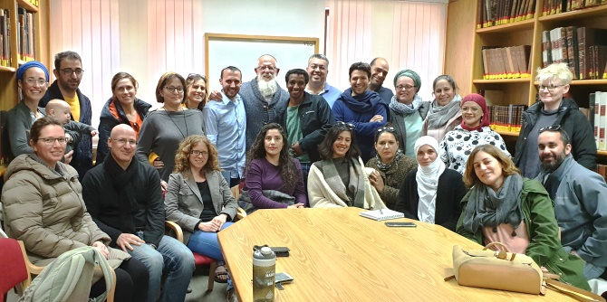

In mid-February, the fellows of the Mandel Center for Leadership in the North's Program for Social Leadership embarked on a field trip to Gush Etzion, in order to see first-hand the realities of life beyond the Green Line, and to be exposed to the world of the religious Zionist yeshivot. The trip was organized and led by Netanel Afek, one of the program's fellows, as part of the program’s “peer learning” component, which enables fellows to share ideas, knowledge, and personal and professional expertise with each other.
As part of their study tour, the fellows visited the “Shorashim” initiative, where they met with Ali Abu Awad and Hadassah Froman, who are working to foster Israeli-Palestinian dialogue and promote peaceful and respectful coexistence.
From there, the fellows traveled to the Har Etzion yeshiva and learned about its "hesder" program, which combines extensive Torah study with military service. Their visit to the yeshiva was led by Rabbi Yaakov Medan, one of the heads of the yeshiva, who co-authored the Gavison-Medan Covenant, a proposal for a new arrangement for religion and state in Israel.
In Kfar Etzion, a religious kibbutz, the fellows watched an audio-visual presentation that tells the story of Kfar Etzion and the surrounding Etzion Bloc in the pre-state era. At the end of their visit, they met with Yaron Rosenthal, the principal of the Kfar Etzion field school, who spoke about attempts to facilitate shared living between Jews and Palestinians in the area.
The field trip was both instructional and challenging, exposing the fellows to different realities of life and sparking extensive discussion upon their return to the Mandel Center for Leadership in the North.

{kind=link}